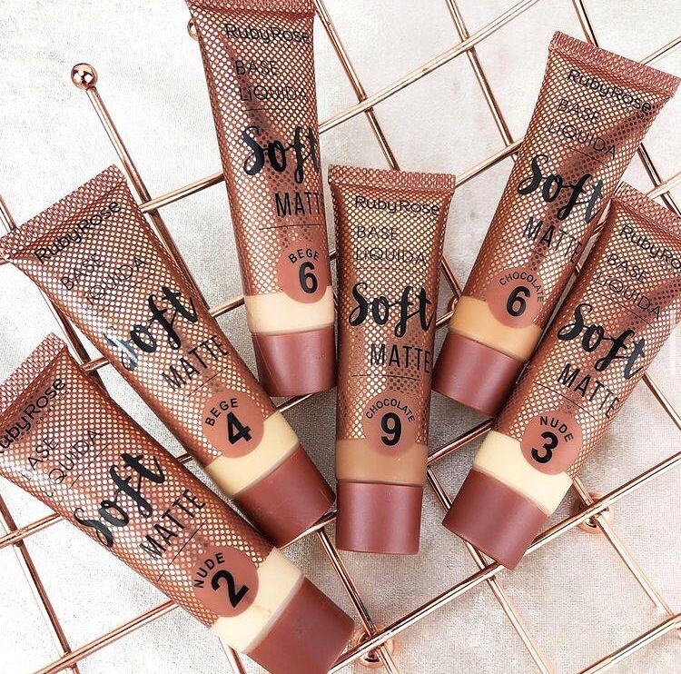

Bases

¿Cómo elijo la base perfecta?
Si tienes piel seca, la ideal para ti, es soft matte y natural look, ya que ofrecen a tu piel un glow natural que hará lucir a tu piel luminosa naturalmente, pero si tienes piel grasa o no te gusta el efecto brillo en la piel, tu ideal es la referencia matte, que proporciona a tu piel un aspecto de piel seca.
Para escoger tu tono de base, es importante que ya tengas un reconocimiento previo de tu piel y lo que más se recomienda a la hora de hacer una compra Online, es que ya tengas definido qué producto y en qué tono lo vas a adquirir, ya que es de gran responsabilidad para las tiendas recomendar un tono de base a una persona a la distancia.
|  |